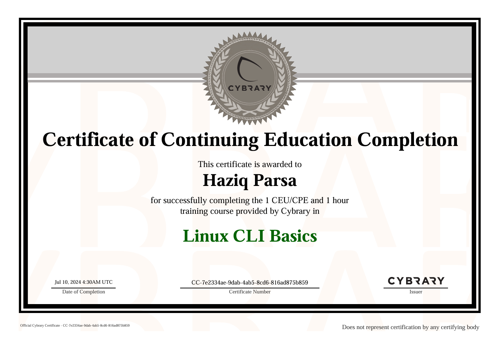
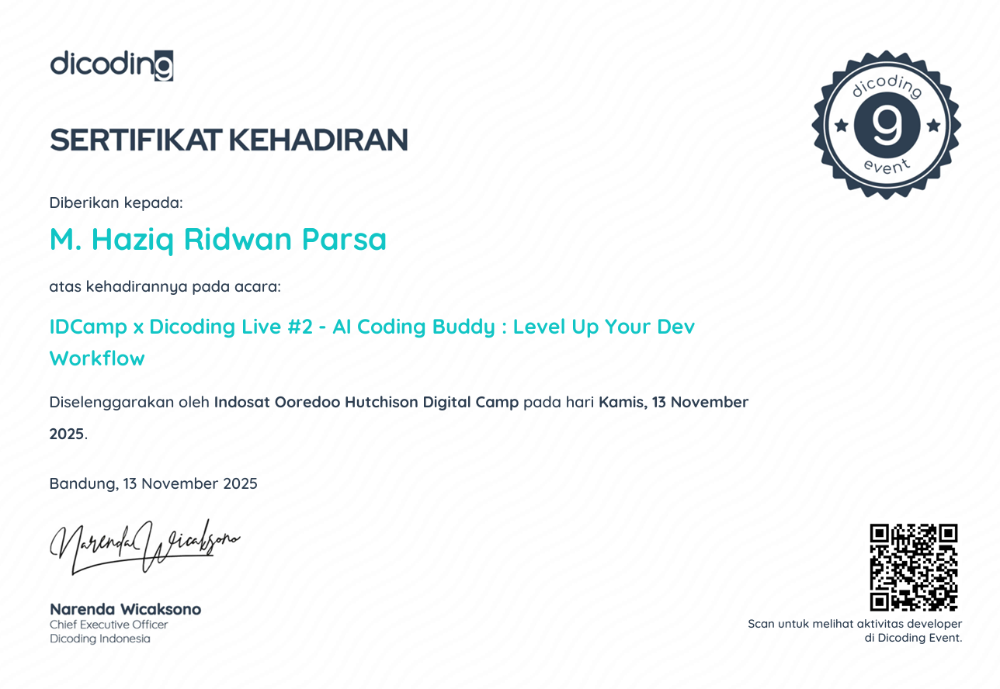
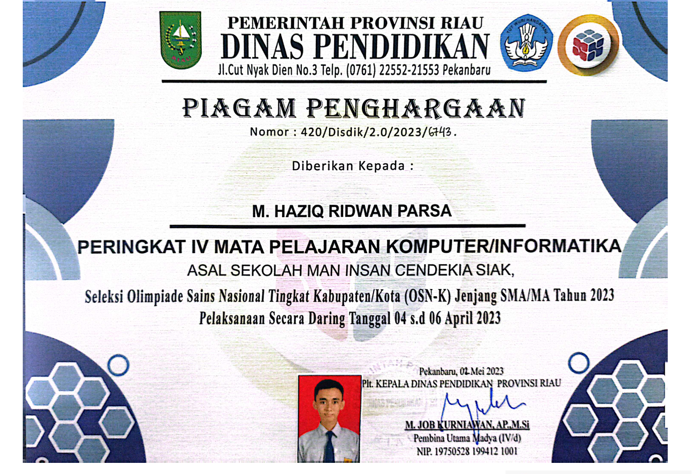

Halo, Saya
M. Haziq Ridwan Parsa
Mahasiswa Teknik Informatika | Web Developer & Cyber Security
Nama saya M. Haziq Ridwan Parsa yang kerap disapa Haziq. Saya merupakan seorang mahasiswa Teknik Informatika angkatan 2025 yang sedang berkuliah di Institut Teknologi Sepuluh Nopember (ITS). Saya berminat dalam web development dan cyber security.

Tentang Saya
Sebagai mahasiswa Teknik Informatika ITS, saya memiliki minat yang mendalam di bidang web development yang tidak hanya bagus secara tampilan, tetapi juga mudah digunakan oleh user di berbagai kalangan usia. Selain di bidang web development, saya juga tengah mengembangkan minat saya di bidang cyber security dan artificial intelligence.
Saya berkeinginan untuk menjadi spesialis cyber security yang juga berkontribusi dalam mendidik generasi muda untuk melek tentang keamanan digital. Dalam bidang web development, saya telah mengenal dan menggunakan beberapa stack dan framework seperti React, Next.js, Bootstrap, dan framework lainnya.
Skills & Tools
Skillset
Toolset
- IDE: Visual Studio Code
- VCS: GitHub / Git
- Design: Figma
- Deploy: Vercel
- Database: MongoDB
- Docs: Notion
Pendidikan
Institut Teknologi Sepuluh Nopember (ITS)
S1 Teknik Informatika | 2025 - Sekarang
MAN Insan Cendekia Siak
Jurusan IPA | 2022 - 2025
Portofolio
Beberapa projek yang pernah saya buat sebelumnya
Final Project Magang Bayucaraka
Membuat prototype lengan robot yang mampu memindahkan payload dari tujuan ke target bersama dengan rekan dari elektrikal dan mekanikal
Website Kenang
Website yang dibuat untuk perlombaan yang bertujuan untuk mengidentifikasi kualitas suatu produk berdasarkan citra dengan menggunakan openCV.
Arischain
Membuat website berbasis blockchain sebagai wadah untuk melakukan arisan yang aman dan terlindungi.
Gallery
Dokumentasi kegiatan akademik
Website Kenang
Tampilan dari website kenang yang telah dibuat.

Sertifikat CLI-Basic
Sertifikat yang didapat setelah menamatkan kursus dasar linux cli.

Sertifikat Seminar Dicoding
Sertifikat yang didapat setelah mengikuti seminar Dicoding.

Sertifikat Penghargaan OSK Bidang Informatika 2023
Sertifikat yang didapat setelah memenangkan OSK Bidang Informatika.
Contact & Identitas
- Nama: M. Haziq Ridwan Parsa
- NIM: 5025123456
- Prodi: Teknik Informatika - ITS
- Email: haziqvanillacake@gmail.com
- Telp: 081234567890
- Kota: Surabaya
- Instagram: @hazyqparsa